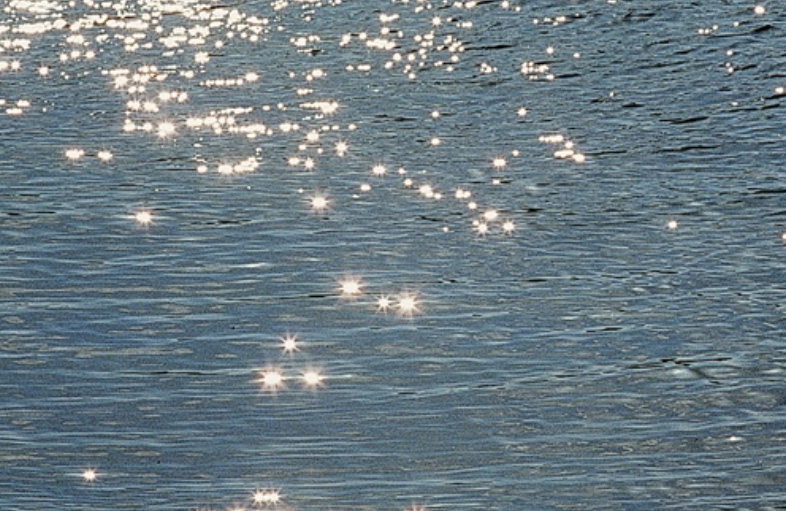
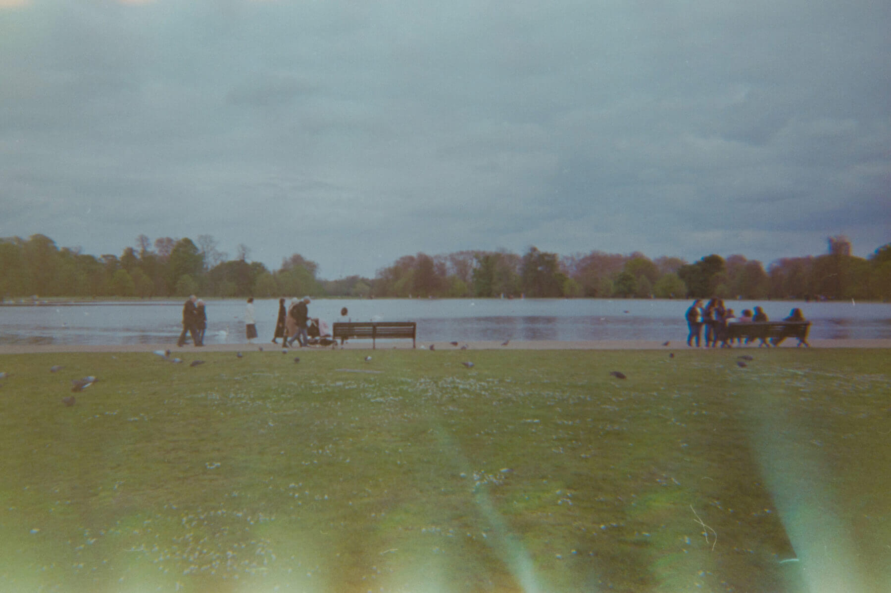

A day in Hyde Park
story o3
While walking down the road,
I spotted a glistening, long and white shimmer through the trees.
next ∇
I spotted a glistening, long and white shimmer through the trees.

next ∇
The blend of silver and white was
stunningly beautiful.
Following the glimmer,
I turned my direction and
walked towards it.
As I got closer, I realised that it was a pond.
I like the proportion of scenery with the sky's blue, the lake's silver, and the grass's green.
I captured the view with my camera,

and noticed a white something spread out on a patch of grass. next ∇
Upon closer inspection,
it turned out to be daisies.
I was uncertain as to why they were the only ones blooming here.
Next to them,
there was a huge crowd of people.
It
was
because of
many swans
gathered there.
One, two, three, four...
I began counting the swans.
There
were
24 swans
in total.

It was my first time
seeing
so many swans
at once.
People usually think of swans
as elegant creatures,
but I find their black-masked faces
with orange beaks incredibly cute.
next ∇
I took several pictures of
the swans and walked along the lake.
There were no swans on the other side of the lake,
which was peaceful yet somewhat desolate.
This type of dark weather,
where the colours become clearer
due to low saturation,
is quite nice.
Who knows,
maybe some fascinating creature
would come out of the pond.
I left
the interesting lake behind
and continued
on a different path.